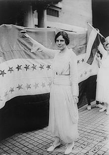

Biography
In 1916, Alice Paul founded the National Woman’s party. She led pickets at the White House and Congress and despite America’s entry into World War I. She and her colleagues were arrested and imprisoned. They had hunger strikes and were forced fed. Ultimately her tactics induced President Woodrow Wilson to make a federal suffrage amendment a war measures priority. Paul was a pivotal force in the ratification in 1920 of the Nineteenth Amendment.

In 1923, she proposed an Equal Rights Amendments to the Constitution. Overcoming the opposition of women’s organizations, she helped gain acceptance of an era in the platforms of both major political parties in 1944. She continued to work actively out of the National Women's party headquarters in Washington, D.C., until her health was failing and she went to the Connecticut countryside in. Even then she continued to provide inspiration to new generations of women’s rights activists. She continued this until her death in 1977.
Throughout her life, Alice Paul remained professionally demanding of both herself and her colleagues. Her vision for women always transcended her rigidity. ‘I think if we get freedom for women, then they are probably going to do a lot of things that I wish they wouldn’t do,’ is what she said shortly before her death. ‘But it seems to me that isn’t our business to say what they should do with it. It is our business to see that they get it.’